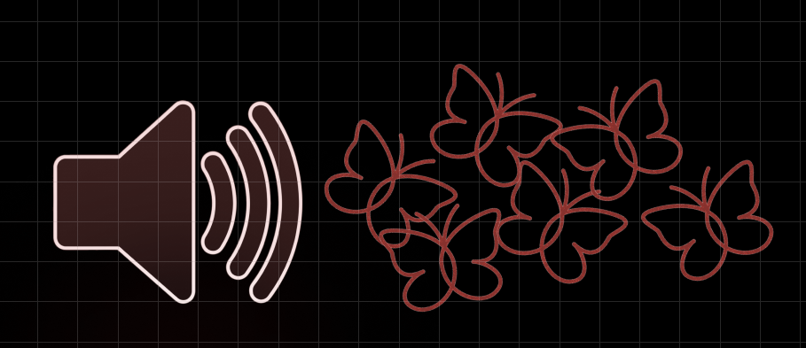
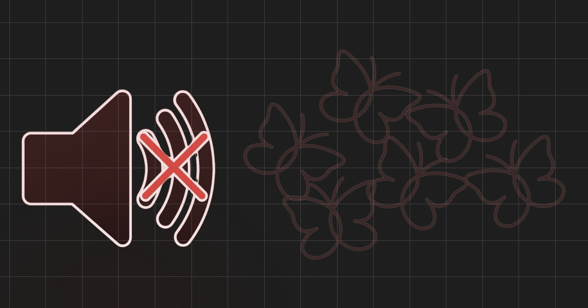

Unraveling is a tense, paranoia-themed game built by VGDev, Georgia Tech's video game development club. I'm one of its UI designers, and my job is to make the interface feel like part of that uneasy world while still being clear and usable while someone plays.
Overview
Designing UI that fits a paranoid mood
On a game this size, the interface can easily feel bolted on. My aim is the opposite: menus, screens, and controls that belong to Unraveling's dark, on-edge tone, so the UI adds to the atmosphere instead of breaking it. The constant tension is mood versus clarity, a screen can look unsettling, but a player still has to understand it instantly mid-game.
I design in Figma and work inside a 100+ member team, which means my pieces have to match a shared visual direction and hold up to feedback from other designers and developers. I resolve the tension by keeping the styling dark and tense while the structure, layout, labels, and states, stays simple and readable.
Contributions
What I've designed
Start screens
Entry screens that set the game's tone the moment it opens.
Menus
Navigation and settings laid out to stay legible against the dark theme.
In-game UI
On-screen elements that work during play without pulling focus from the game.
Paranoia overlay
A screen treatment that makes the player feel watched and uneasy.
Music toggle
An in-game sound control with clear on and muted states.
Atmosphere
The paranoia overlay

Interaction
Music toggle: two clear states
For the in-game music control I designed both states so a player can tell at a glance whether sound is playing. Keeping the on and muted states visually consistent makes the control easy to read and keeps it in step with the rest of the interface.


What I'm taking from it. Designing inside a large team taught me to make UI that serves both the mood and the player, and to revise my work based on feedback so it fits a shared direction rather than just my own. The result is a set of interface pieces that look like they belong in Unraveling and still give players clear, immediate feedback.